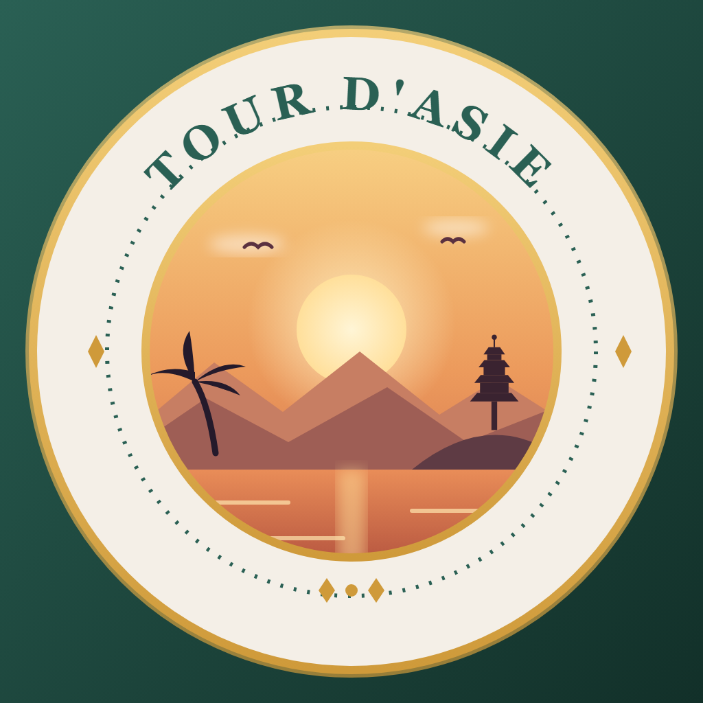

🎨 Ton logo — la fusion de tes 2 préférés
Tu as adoré le 2 (la scène) et le 3 (le badge) — alors je les ai combinés : le cadre « tampon de voyage » avec la scène complète à l'intérieur.
★ Ma proposition — Fusion 2 + 3

🎖️ Badge « Tour d'Asie » + scène au coucher de soleil
soleil, montagnes, palmier, temple, mer, oiseaux — le tout dans l'écusson
Pour comparer, tes deux préférés séparés :

2
🌅 Scène seule

3
🎖️ Badge (montagnes simples)
👉 Dis-moi : la fusion te va comme logo final ? Ou tu préfères le 2 ou le 3 tout seul ? Et tout ajustement est possible (couleurs, enlever le palmier, agrandir le temple…).
💡 Astuce : je peux aussi utiliser la scène (2) comme grande image d'accueil dans l'appli, et le badge comme icône — les deux à la fois !
💡 Astuce : je peux aussi utiliser la scène (2) comme grande image d'accueil dans l'appli, et le badge comme icône — les deux à la fois !